צילמתי את מסכי הכניסה של אתרים מובילים כפי שהם נראים בטלפון. כמעט כולם, כולל TraderSync שממנו לקחנו את הרעיון, מוותרים בטלפון על הצד עם המוצר ומשאירים רק את הטופס.
הכי נפוץ, בפער. בטלפון אין מקום לשני חצאים, ומי שמגיע למסך כניסה רוצה להיכנס מהר. TraderSync מעלים את כל הצד עם הדשבורד והכותרת, ונשאר טופס כהה ונקי.
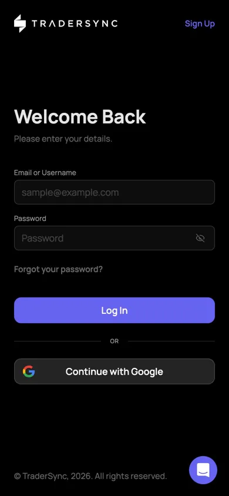
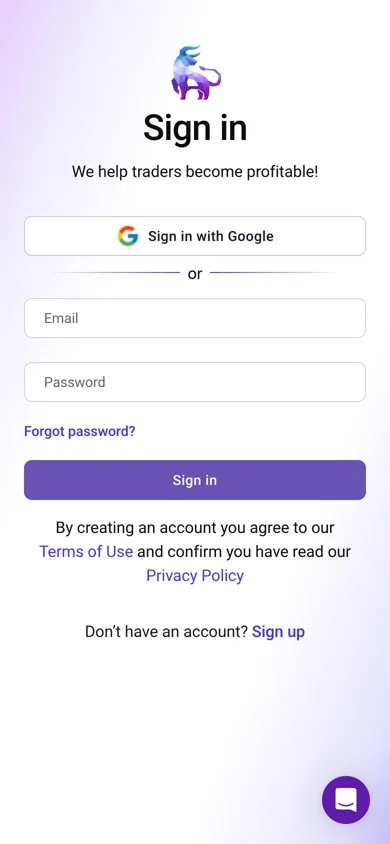
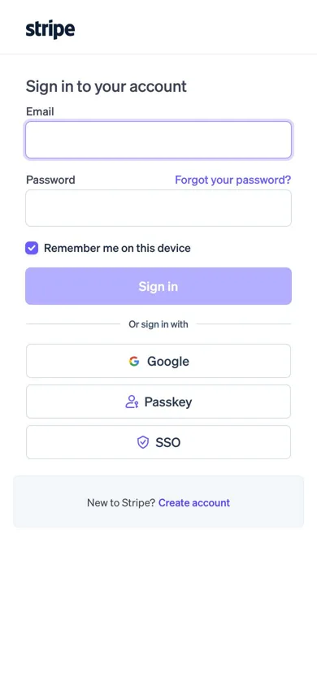
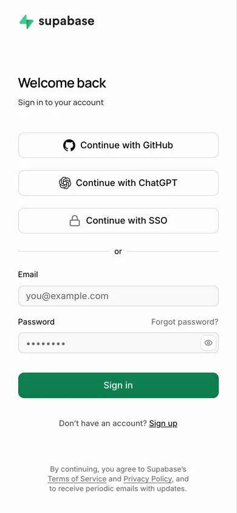
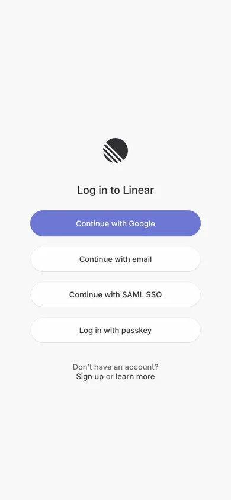
שורה או שתיים שמסבירות מה המוצר, ומתחת מיד הטופס. הכל במסך אחד, בלי לגלול.
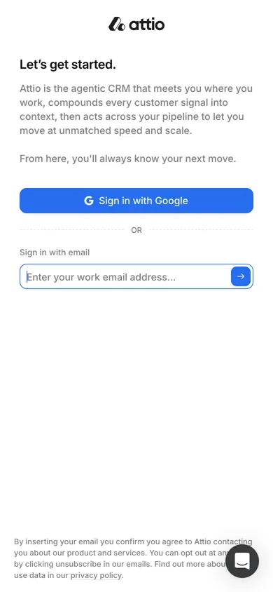
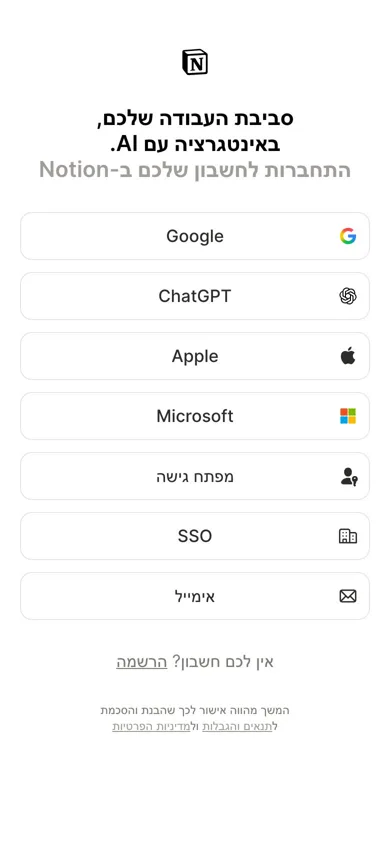
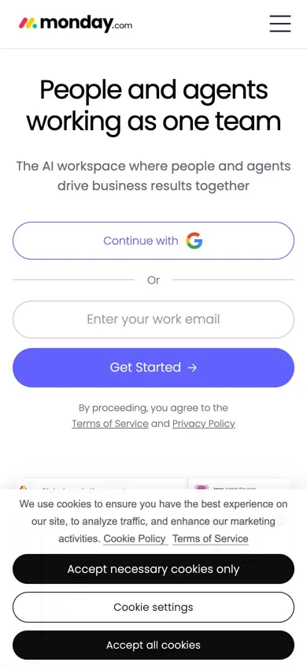
זה מה שיש אצלנו כרגע. Mixpanel עושים את זה עם פרסומת לוובינר. נדיר אצל הגדולים, כי רוב האנשים לא גוללים במסך כניסה.
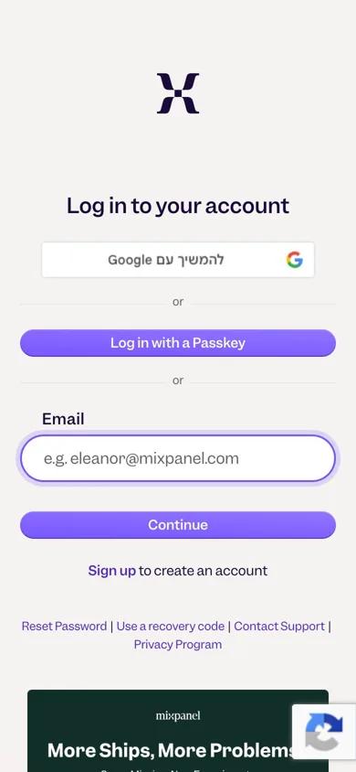
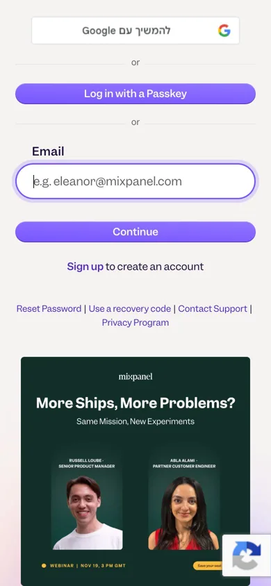
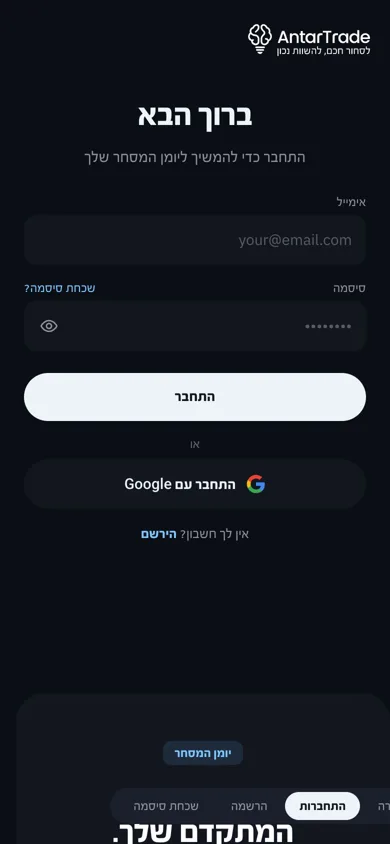
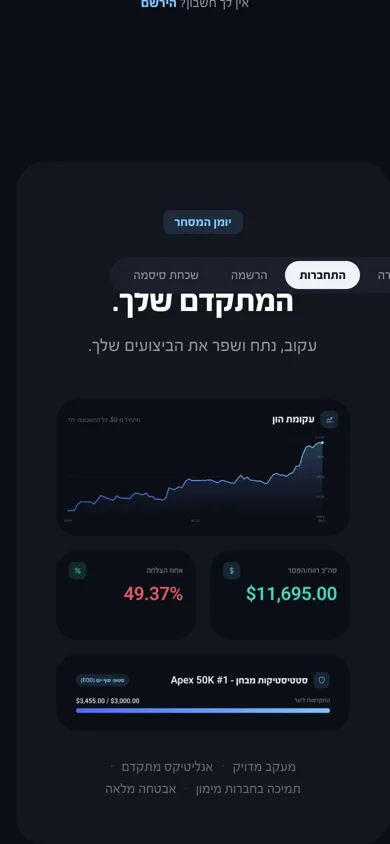
המלצה: גישה 2. בראש המסך, מעל "ברוך הבא", התגית "יומן המסחר" והשורה "יומן המסחר המתקדם שלך. עקוב, נתח ושפר את הביצועים שלך." בקטן. אחר כך הטופס. הכל במסך אחד, בלי גלילה, וסוחר חדש עדיין מבין מה הוא מקבל.
החלופה הנקייה היא גישה 1, כמו TraderSync: רק הטופס. הפאנל עם הכרטיסים נשאר למחשב, כי בטלפון הוא יושב מתחת לטופס ואף אחד לא יראה אותו.